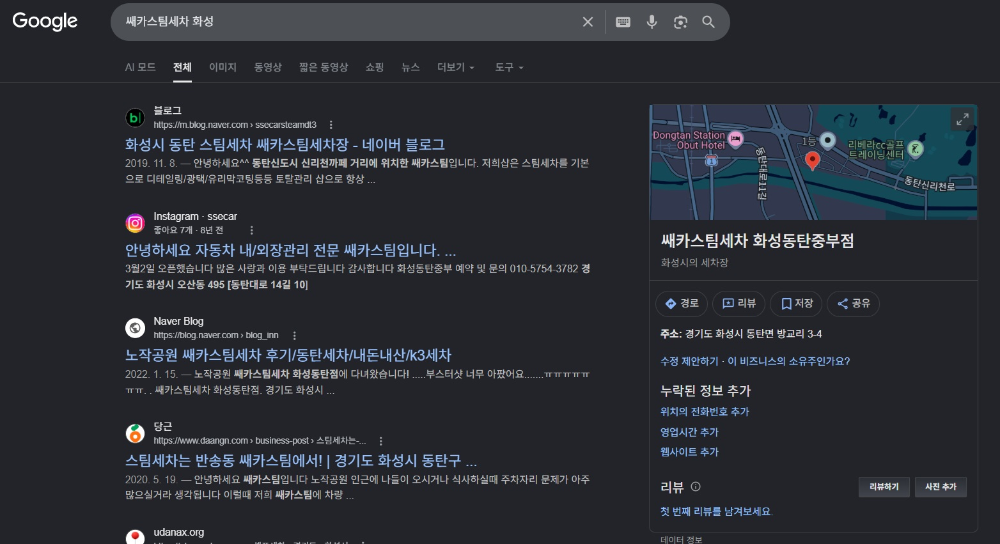

포르쉐도, 벤츠도 쌔카를 거쳐 갔습니다.
리뷰 64건과 수십 건의 시공 사례 — 실력의 증거는 충분합니다.
이제 한 가지만 더 또렷하게 — 차를 맡기기 전, 고객이 보는 화면입니다.
출근길에 맡긴 차를, 퇴근길에 다시 받습니다. 그 사이 고객은 쌔카를 믿고 자기 하루를 비웁니다. 그 믿음에 답하는 건 실력이고 — 그 믿음을 얻는 건, 맡기기 전 보이는 화면입니다.
쌔카의 작업은 이미 최고 수준입니다. 남은 건 실력이 아니라, 고객이 차를 맡기기 전 만나는 화면을 더 또렷하게 다듬는 일입니다.
이어지는 자산
더 또렷해질 화면
내 차를 맡기는 일은, 결국 믿음을 맡기는 일입니다. 그 사이 화면이 흐리면, 손님은 단계마다 조용히 빠집니다. 아래 ‘흐림 / 선명’을 직접 바꿔 보세요.
화면이 흐리면, 단계마다 손님이 조용히 빠집니다.
화면이 선명하면, 더 많은 손님이 끝까지 옵니다.
제안서의 역할은 화려한 약속이 아니라, 단계마다 좁아지지 않게, 화면을 선명하게 만들어 두는 일입니다.
30·40대 차주도 ‘동탄 광택 잘하는 곳’을 AI에게 묻습니다. 그리고 AI는 이미 쌔카를 설명하고 있습니다.
핵심은 AI가 누구를 추천하느냐가 아닙니다. 쌔카가 그 답에 들어갈 공식 근거를 온라인에 갖추는 것입니다.
지금 AI는 당근·블로그에 있는 정보를 모아 쌔카를 설명합니다. 구글 지도·홈페이지·정리된 리뷰 같은 공식 근거를 함께 마련하면, AI와 구글이 쌔카를 더 정확하게 안내합니다. 이번 작업은 노출을 사는 일이 아니라, AI와 구글이 참고할 근거를 정리하는 일입니다.
네이버는 발견의 출발점입니다. 확신이 안 선 차주는 구글에서 다시 확인하고, AI에게 한 번 더 묻습니다. 쌔카는 그 모든 화면에서 같은 매장으로 보여야 합니다.
동탄을 중심으로 100만을 돌파한 화성은, 전국에서 가장 젊고 구매력 높은 도시 중 하나입니다. 젊은 차주일수록 차 맡길 곳을 더 깐깐하게 — 그리고 온라인으로 — 고릅니다.
젊고 구매력 있는 차주가, 수입차를 몰고, 점점 온라인으로 차 맡길 곳을 고릅니다. 이 흐름을 미리 정리해 두면, 그만큼 앞서갈 수 있습니다.
출처 — 화성특례시 관련 보도자료 및 언론 보도, KAIDA 수입차 신규등록 통계, 와이즈앱·리테일 ChatGPT 앱 사용자 조사 기준.
쌔카는 이미 그 사진을 갖고 있습니다 — 다만 결론부터 보여주지 않고 있을 뿐입니다.
정비할 세 가지
기반은 이미 충분합니다. 이제 이 후기가 ‘내 차종 사례’로 정리되어 보이게만 하면 됩니다.
★4.42 · 리뷰 64건. 발견 채널로서의 기반은 충분합니다. 보완은 ‘새로 만드는 일’이 아니라 ‘정리하는 일’입니다.
구글 비즈니스 프로필을 함께 마련하면, 구글과 AI가 쌔카를 더 정확하게 안내합니다. 네이버에서 쌓은 신뢰를, 구글에서도 그대로 보여주는 단계입니다.

검색은 ‘찾으러 온 고객’을 받습니다. 콘텐츠는 ‘아직 안 찾은 고객’에게 먼저 가닿는 채널입니다.
많은 고객이 ‘문의’ 직전에서 떠납니다. 물어보기 전에 답이 보이면, 문의가 늘어납니다.
검색·사진·후기·문의는 한 번에 끝나지 않습니다. 같은 기준으로 단계적으로 맞춰질 때 흔들리지 않습니다.
차주의 고민은 계절마다 바뀝니다. 그리고 그 고민은 늘 검색으로 먼저 나타납니다. 1년 운영은, 이 계절 수요를 미리 깔아 두는 일입니다.
계절마다 콘텐츠와 검색 화면을 미리 깔아 두면, 수요가 올 때 그 검색이 쌔카로 옵니다. 한 번 세팅(A안)보다 1년 운영(B안)이 강한 이유가 여기 있습니다.
아래는 항목을 개별 외주로 진행할 때의 일반적인 시장가 범위입니다.
＊ 위 금액은 개별 외주 시의 일반적 시장가 범위로, 이해를 돕기 위한 참고치입니다.
＊ 위 금액은 제안 기준선이며, 매장 상황·결제 방식(분기 등)에 맞춰 조정해 다시 안내드립니다. AI 검색은 노출을 ‘보장’하는 광고가 아니라, AI·구글이 읽을 근거를 갖추는 기반 작업입니다.
과장된 약속보다, 맡기기 전 불안을 줄이는 구조를 만드는 데 집중합니다.
처음부터 모든 채널을 벌이지 않습니다. 검색·신뢰 화면을 먼저 세우고, 숫자로 검증한 뒤 효과 난 채널에만 확장 투자합니다.
＊ 참고 — 동탄(동부권역)은 외국인 비중 1% 내외이고, 화성 외국인 다수는 서부 산업단지 근로자입니다. 그래서 외국인 직접 타깃보다, 화성에 밀집한 기업·법인차(B2B)가 더 큰 기회입니다. LinkedIn은 ‘외국인용’이 아니라 ‘B2B용’으로 씁니다.
그래서 이 제안은 ‘한 번 쓰고 끝나는 비용’이 아니라, 실적을 확인하며 키우는 성장 시스템의 0단계입니다.
검색·사진·가격·후기·문의 — 고객이 차를 맡기기 전 보는 화면을 정돈하는 일입니다. 실력은 이미 충분하니까요. 가격표와 전후 사진, 지금 쓰시는 채널만 알려주시면 첫 90일 순서로 정리해 드리겠습니다.